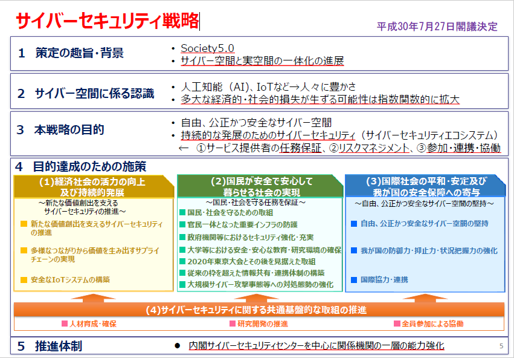
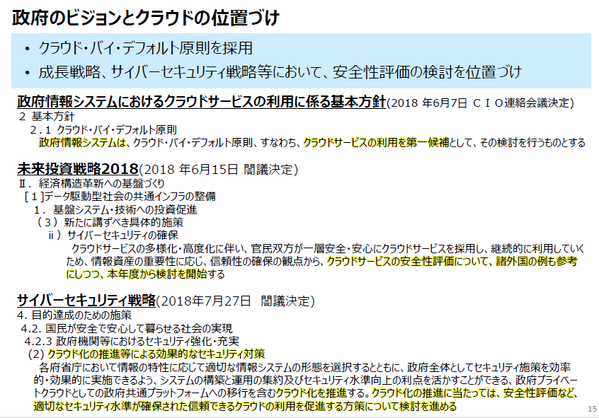
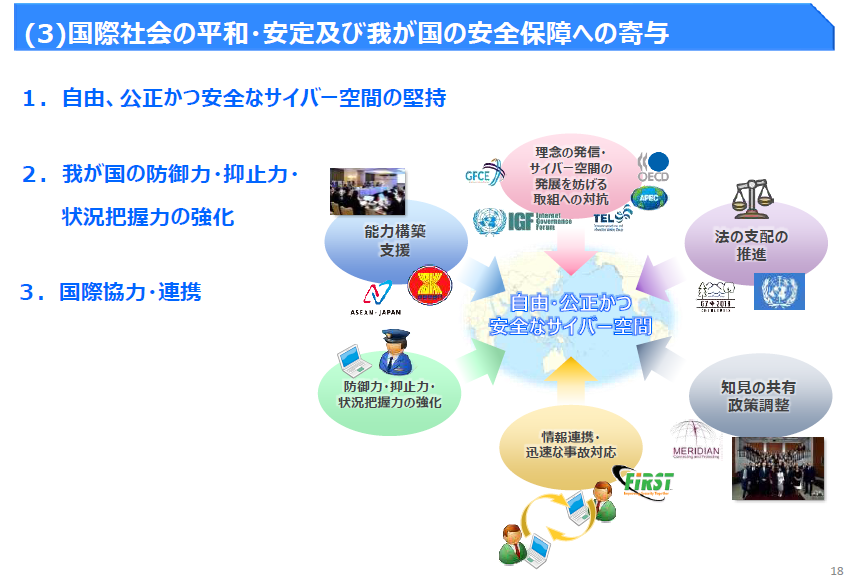
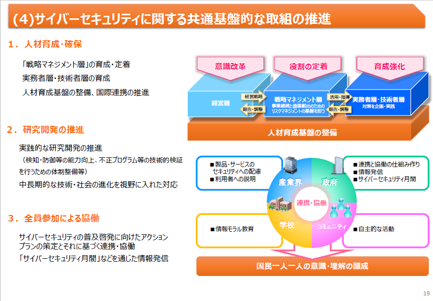
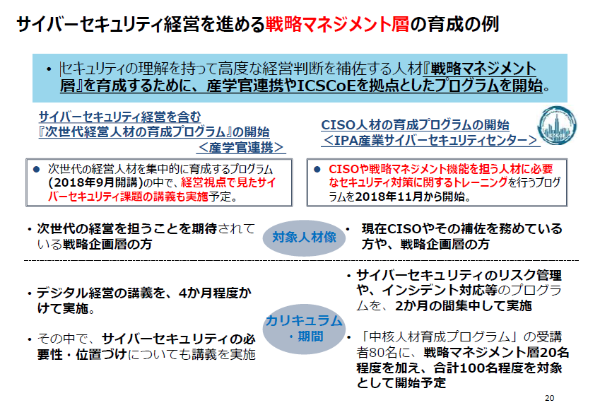
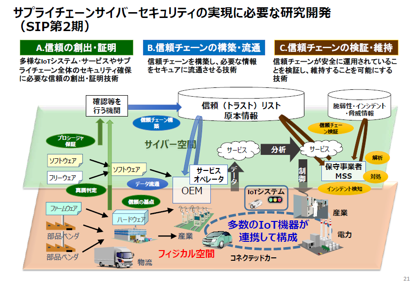

内閣官房内閣サイバーセキュリティセンター(NISC) 内閣審議官
経済産業省(METI) サイバーセキュリティ・情報化審議官
三角育生
トップ
Society 5.0では
我が国のデータ利活用の現状
Connected Industries実現のためのデータ関連制度の整備
サイバーセキュリティ戦略

１ 策定の趣旨・背景
• Society5.0
• サイバー空間と実空間の一体化の進展
２ サイバー空間に係る認識
３ 本戦略の目的
(1)経済社会の活力の向上及び持続的発展
セキュリティに関する経営層の関わり
NIKKEI225企業の情報提供
サイバーセキュリティ経営ガイドライン
現状：日本企業は、委託先等の取引先への対策が欧米に比べて遅れている
サイバー保険等と連携して中小企業を支援する『サイバーセキュリティお助け隊』の創設
サプライチェーン構造の変化を踏まえ、新たな枠組みを提唱
(2)国民が安全で安心して暮らせる社会の実現
サイバーセキュリティ基本法の一部を改正する法律案の概要
政府のビジョンとクラウドの位置づけ

• クラウド・バイ・デフォルト原則を採用
• 成長戦略、サイバーセキュリティ戦略等において、安全性評価の検討を位置づけ
政府情報システムにおけるクラウドサービスの利用に係る基本方針(2018 年6月7日ＣＩＯ連絡会議決定)
未来投資戦略2018(2018 年6月15日閣議決定)
サイバーセキュリティ戦略(2018年7月27日閣議決定)
クラウドサービスに係る世界の潮流（海外政府調達について）
クラウドサービスの安全性評価に関する検討会におけるスコープ
クラウドサービスの安全性評価に関する検討会におけるスコープ
(3)国際社会の平和・安定及び我が国の安全保障への寄与

１．自由、公正かつ安全なサイバー空間の堅持
２．我が国の防御力・抑止力・状況把握力の強化
３．国際協力・連携
(4)サイバーセキュリティに関する共通基盤的な取組の推進

１．人材育成・確保
「戦略マネジメント層」の育成・定着
実務者層・技術者層の育成
人材育成基盤の整備、国際連携の推進
２．研究開発の推進
３．全員参加による協働
サイバーセキュリティの普及啓発に向けたアクション
プランの策定とそれに基づく連携・協働
「サイバーセキュリティ月間」などを通じた情報発信
サイバーセキュリティ経営を進める戦略マネジメント層の育成の例

• セキュリティの理解を持って高度な経営判断を補佐する人材『戦略マネジメント層』を育成するために、産学官連携やICSCoEを拠点としたプログラムを開始。
サイバーセキュリティ経営を含む『次世代経営人材の育成プログラム』の開始＜産学官連携＞
CISO人材の育成プログラムの開始＜IPA産業サイバーセキュリティセンター＞
サプライチェーンサイバーセキュリティの実現に必要な研究開発（SIP第2期）

A.信頼の創出・証明
B.信頼チェーンの構築・流通
C.信頼チェーンの検証・維持